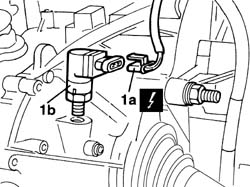
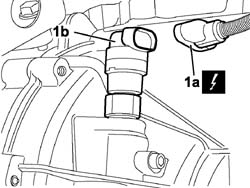

2180A36 milometer control sensor on gearbox - r + r
- Path
- Procedures > 21 GEARBOX UNIT > 2180 SPEED SIGNAL CONTROLS' > 2180A milometer control > 2180A36 milometer control sensor on gearbox - r + r
- Kind
- repair procedure (removal / refitting; the operation number is the code)
- Applies to
- all engines; all production periods
- Interactive page
- https://sloeber94.github.io/elrnDB-fDbl/en/#/2584603
Applies to: all engines; all production periods
 Removing
Removing
 Refitting
RefittingPlace the car on a ramp.
Disconnect the battery negative terminal.
Raise the car.
Op. 7055B54 PROTECTION/GUARD UNDER ENGINE - R.R.
1. Disconnect the electrical connection (1a), and unscrew and remove the speedometer gear sensor (1b) from its seating on the gearbox.
 | Name | Connector |
|---|---|---|
1a | Speedometer sensor |

Applies to: all engines; all production periods
Refitting
RemovingFit the speedometer sensor on the gearbox.
Tighten to torque the ring nut securing the speedometer gear sensor.
 | Fastening | Component | Ø | Value (daNm) |
|---|---|---|---|---|
- | Ring nut | VEHICLE SPEED SENSOR | M18 x 1.5 | 5 |
Connect the sensor's electrical connection.
| Name | Connector |
|---|---|---|
- | Speedometer sensor |
Op. 7055B54 PROTECTION/GUARD UNDER ENGINE - R.R.
Lower the vehicle.
Connect the battery negative terminal.
Remove the vehicle from the lift.
Applies to: engines: 1.3 JTD 16V; all production periods
Removing
RefittingPlace the car on a ramp.
Disconnect the battery negative terminal.
Carry out
Op. 7055B54 PROTECTION/GUARD UNDER ENGINE - R.R..
Disconnect the electrical connection (1a), and unscrew and remove the speedometer gear sensor (1b) from its seating on the gearbox.
| Name | Connector |
|---|---|---|
1 | Speedometer sensor |

Applies to: engines: 1.3 JTD 16V; all production periods
Refitting
RemovingFit the speedometer sensor on the gearbox.
| Name | Connector |
|---|---|---|
1 | Speedometer sensor |
Tighten to torque the ring nut securing the speedometer gear sensor.
| Fastening | Component | Ø | Value (daNm) |
|---|---|---|---|---|
- | Ring nut | VEHICLE SPEED SENSOR | M18 x 1.5 | 5 |
Connect the electrical connection of the speedometer sensor.
| Name | Connector |
|---|---|---|
1 | Speedometer sensor |
Carry out
Op. 7055B54 PROTECTION/GUARD UNDER ENGINE - R.R..
Connect the battery negative terminal.
Remove the vehicle from the lift.